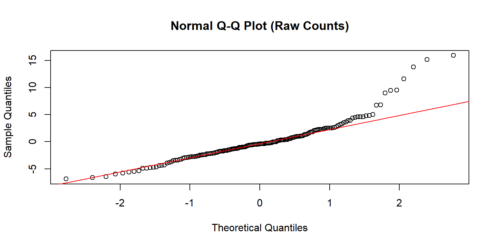
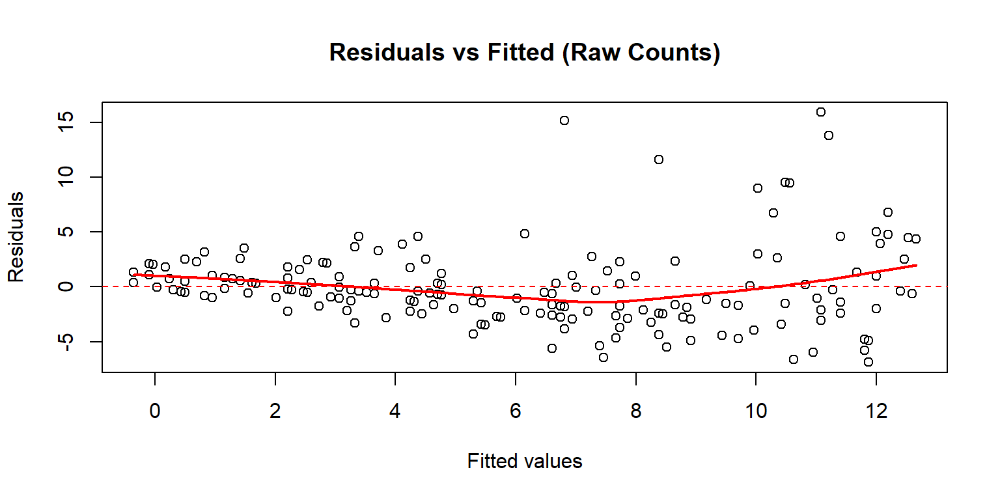
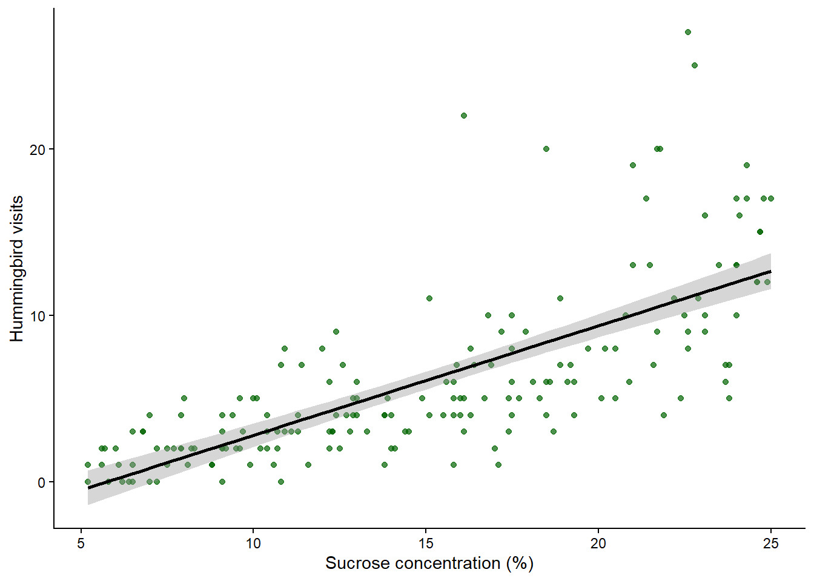
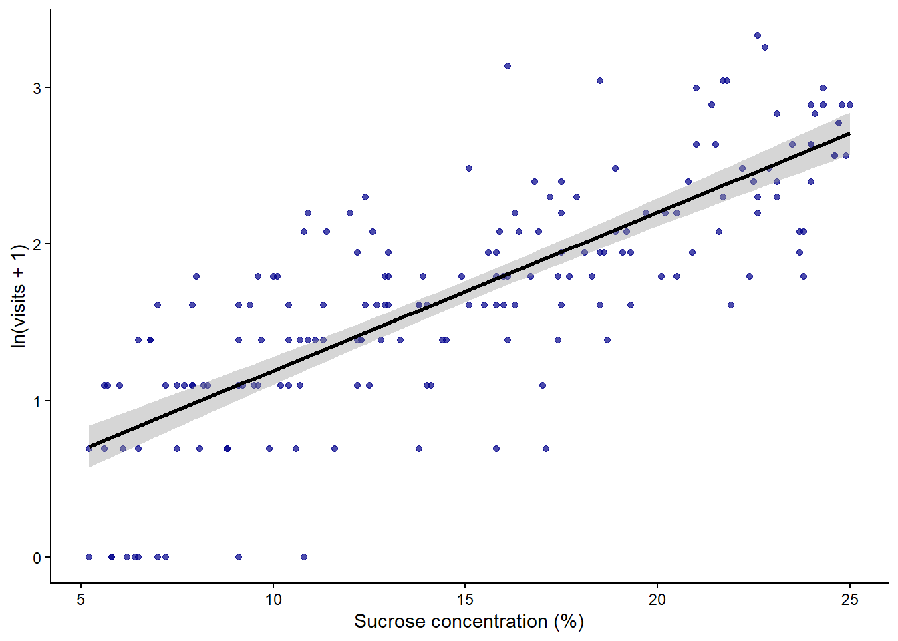
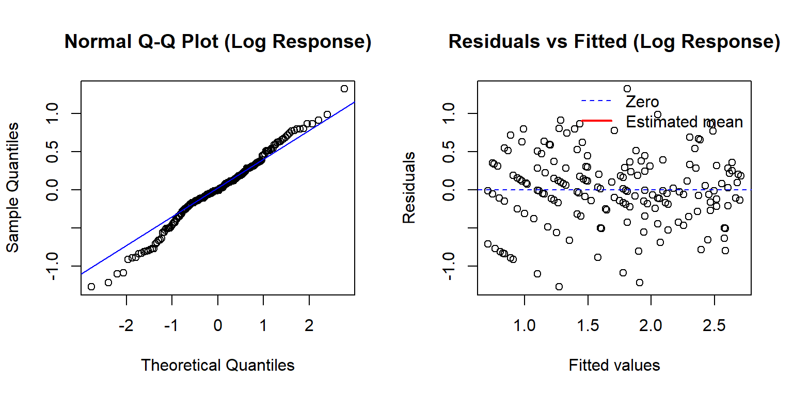

Poisson Counts, Log Transformations & Intro to Poisson GLMs
Author
PLSC/ANSC/SNR 571
For this activity you will need the car package and the ggplot2 package.
Overview
This in-class coding activity has four sections: the wrong model, a log transformation, a Poisson GLM, and a short look ahead to next week. All code is provided: your job is to run the code, look at the output, and answer the discussion questions on Canvas.
I will start with a hummingbird feeder dataset. The response variable is the number of feeder visits during a fixed observation period. Run each chunk in order, read the short notes, and then submit your answers on Canvas.
Section 1. Load the data and fit the wrong model (~7 min)
I will start simple and only use sucrose_pct, which is the strongest continuous predictor in this dataset.
visits sucrose_pct feeder_height_cm shade_pct feeder_color
Min. : 0.000 Min. : 5.20 Min. : 80.8 Min. : 0.40 blue :52
1st Qu.: 2.000 1st Qu.:10.07 1st Qu.:110.4 1st Qu.:19.38 red :65
Median : 5.000 Median :15.00 Median :149.1 Median :43.00 yellow:63
Mean : 6.078 Mean :14.99 Mean :148.0 Mean :43.90
3rd Qu.: 8.000 3rd Qu.:19.80 3rd Qu.:182.7 3rd Qu.:65.42
Max. :27.000 Max. :25.00 Max. :218.4 Max. :89.10
site
edge :44
forest :30
meadow :55
orchard:51
Fit a linear model to the raw counts
wrong_model <-lm(visits ~ sucrose_pct, data = poisson_data)summary(wrong_model)
Call:
lm(formula = visits ~ sucrose_pct, data = poisson_data)
Residuals:
Min 1Q Median 3Q Max
-6.874 -2.131 -0.414 1.388 15.916
Coefficients:
Estimate Std. Error t value Pr(>|t|)
(Intercept) -3.78163 0.74509 -5.075 9.68e-07 ***
sucrose_pct 0.65778 0.04634 14.194 < 2e-16 ***
---
Signif. codes: 0 '***' 0.001 '**' 0.01 '*' 0.05 '.' 0.1 ' ' 1
Residual standard error: 3.616 on 178 degrees of freedom
Multiple R-squared: 0.5309, Adjusted R-squared: 0.5283
F-statistic: 201.5 on 1 and 178 DF, p-value: < 2.2e-16
Residual diagnostics
qqnorm(resid(wrong_model), main ="Normal Q-Q Plot (Raw Counts)")qqline(resid(wrong_model), col ="red")

plot(fitted(wrong_model), resid(wrong_model),xlab ="Fitted values", ylab ="Residuals",main ="Residuals vs Fitted (Raw Counts)")abline(h =0, col ="red", lty =2)# loess smooth of mean residual ~ fittedfv <-fitted(wrong_model)rv <-resid(wrong_model)sm <-loess(rv ~ fv)newx <-seq(min(fv, na.rm =TRUE), max(fv, na.rm =TRUE), length.out =200)lines(newx, predict(sm, newdata = newx), col ="red", lwd =2)

Let’s also look at the raw relationship with a straight line added.
ggplot(poisson_data, aes(x = sucrose_pct, y = visits)) +geom_point(alpha =0.7, color ="darkgreen") +stat_smooth(method ="lm", formula = y ~ x, se =TRUE, color ="black") +theme_classic() +labs(x ="Sucrose concentration (%)",y ="Hummingbird visits" )

📋 Canvas Question (Section 1)
In 1-2 sentences: Which linear-model assumptions look violated here, and what do you see in the plots that makes you say that?
(Submit your answer on Canvas, do not write it here.)
What is the model we run? What is the response variable and what is the explanatory variable?
🛑 Stop Point 1
Pause here: discussion
Section 2. Log transform and re-check (~8 min)
Because some feeders have zero visits, we will use log(visits + 1) instead of log(visits).
Transform the response and plot the relationship
poisson_data$log_visits <-log(poisson_data$visits +1)ggplot(poisson_data, aes(x = sucrose_pct, y = log_visits)) +geom_point(alpha =0.7, color ="darkblue") +stat_smooth(method ="lm", formula = y ~ x, se =TRUE, color ="black") +theme_classic() +labs(x ="Sucrose concentration (%)",y ="ln(visits + 1)" )

Fit a linear model to the transformed response
log_model <-lm(log_visits ~ sucrose_pct, data = poisson_data)summary(log_model)
Call:
lm(formula = log_visits ~ sucrose_pct, data = poisson_data)
Residuals:
Min 1Q Median 3Q Max
-1.27368 -0.22532 -0.00419 0.28468 1.32594
Coefficients:
Estimate Std. Error t value Pr(>|t|)
(Intercept) 0.181697 0.095063 1.911 0.0576 .
sucrose_pct 0.101109 0.005913 17.100 <2e-16 ***
---
Signif. codes: 0 '***' 0.001 '**' 0.01 '*' 0.05 '.' 0.1 ' ' 1
Residual standard error: 0.4613 on 178 degrees of freedom
Multiple R-squared: 0.6216, Adjusted R-squared: 0.6195
F-statistic: 292.4 on 1 and 178 DF, p-value: < 2.2e-16
par(mfrow =c(1, 2))qqnorm(resid(log_model), main ="Normal Q-Q Plot (Log Response)")qqline(resid(log_model), col ="blue")plot(fitted(log_model), resid(log_model),xlab ="Fitted values", ylab ="Residuals",main ="Residuals vs Fitted (Log Response)")abline(h =0, col ="blue", lty =2)legend("topright", legend =c("Zero", "Estimated mean"), col =c("blue", "red"),lty =c(2,1), lwd =c(1,2), bty ="n")

par(mfrow =c(1, 1))
The log transformation often helps because the relationship looks closer to linear and the spread is more stable. A Poisson GLM also uses a log link function, but it models the mean count with that link while keeping a Poisson distribution for the response on the original count scale.
📋 Canvas Question (Section 2)
In 1-2 sentences: What is similar between the transformed lm() and a Poisson glm(), and what is different about what each model assumes for the response?
(Submit your answer on Canvas, do not write it here.)
🛑 Stop Point 2
Pause here
Section 3. Fit the Poisson GLM (~8 min)
Now I will fit the model that matches the count response.
Call:
glm(formula = visits ~ sucrose_pct, family = poisson(link = "log"),
data = poisson_data)
Coefficients:
Estimate Std. Error z value Pr(>|z|)
(Intercept) -0.122579 0.110988 -1.104 0.269
sucrose_pct 0.114188 0.005726 19.941 <2e-16 ***
---
Signif. codes: 0 '***' 0.001 '**' 0.01 '*' 0.05 '.' 0.1 ' ' 1
(Dispersion parameter for poisson family taken to be 1)
Null deviance: 737.43 on 179 degrees of freedom
Residual deviance: 294.88 on 178 degrees of freedom
AIC: 884.45
Number of Fisher Scoring iterations: 5
The slope in this model is on the log scale. If sucrose_pct increases by one unit, the expected log mean count changes by the slope estimate. On the original scale, the expected mean count is multiplied by exp(beta1) for a one-unit increase in sucrose concentration.
Compare the transformed lm() and the Poisson glm()
coef(summary(log_model))
Estimate Std. Error t value Pr(>|t|)
(Intercept) 0.1816973 0.095063133 1.911333 5.756857e-02
sucrose_pct 0.1011094 0.005912821 17.100023 2.064466e-39
coef(summary(poisson_model))
Estimate Std. Error z value Pr(>|z|)
(Intercept) -0.1225793 0.110987924 -1.104438 2.694031e-01
sucrose_pct 0.1141880 0.005726377 19.940713 1.804722e-88
The coefficient for sucrose_pct in the Poisson GLM is on the log scale. What does that number tell you biologically? Now exponentiate it with exp(). What does the exponentiated value represent, and why do we back-transform for predictions but report and test the coefficient on the log scale?
Hint: think about where the normal approximation and the standard errors live, and where the interpretation is most natural for a reader.
(Submit your answer on Canvas, do not write it here.)
# Exponentiate the slope to get the multiplicative effect on the count scaleexp(coef(poisson_model)["sucrose_pct"])
sucrose_pct
1.120963
ANOVA
With one predictor, the test is straightforward. I will use Type II here to keep the workflow consistent with the car package tools we will use later.
IMPORTANT: ANOVA IS ON THE LOG SCALE! The test is for whether the slope on the log scale is significantly different from zero.
📋 Canvas Question (Section 3b)
After looking at both summaries, what differences do you notice between the transformed lm() and the Poisson glm()? Think about the coefficients, standard errors, and how you would interpret fitted values.
(Submit your answer on Canvas, do not write it here.)
Prediction and plotting on the original count scale
So far I only used one predictor, but this dataset has more information. Besides sucrose_pct, you also have feeder_height_cm, shade_pct, feeder_color, and site.
📋 Canvas Question (Section 4)
If you wanted to explain hummingbird visits more fully, what would you do next? What model would you run, and how could you compare different biological hypotheses or competing models?
(Submit your answer on Canvas, do not write it here.)
We will cover multiple predictors and model comparison next week.
For now, run one more model but use one predictor in addition to sucrose
Section 5. Exploring other predictors (~12 min)
In this section you will fit three more Poisson GLMs — one with a different continuous predictor, one with a categorical predictor, and one that combines sucrose with a categorical predictor. All the code is provided. Where you see # PLACEHOLDER, swap in the variable name of your choice.
5a. A second continuous predictor
Choose one of the remaining continuous predictors: feeder_height_cm or shade_pct. Replace YOUR_VARIABLE with your choice throughout this chunk.
# PLACEHOLDER — replace YOUR_VARIABLE with feeder_height_cm or shade_pctcont_model <-glm( visits ~ feeder_height_cm,family =poisson(link ="log"),data = poisson_data)summary(cont_model)Anova(cont_model, type ="II")
# PLACEHOLDER — replace YOUR_VARIABLE in both the data.frame() call and the# min()/max() call belownew_data_cont <-data.frame(YOUR_VARIABLE =seq(min(poisson_data$feeder_height_cm),max(poisson_data$feeder_height_cm),length.out =200 ))pred_cont <-predict(cont_model, newdata = new_data_cont, type ="link", se.fit =TRUE)new_data_cont$fit <-exp(pred_cont$fit)new_data_cont$lwr <-exp(pred_cont$fit -1.96* pred_cont$se.fit)new_data_cont$upr <-exp(pred_cont$fit +1.96* pred_cont$se.fit)
# PLACEHOLDER — replace YOUR_VARIABLE in both aes() calls and in the x labelggplot(poisson_data, aes(x = feeder_height_cm, y = visits)) +geom_point(alpha =0.65, color ="darkgreen") +geom_ribbon(data = new_data_cont,aes(x = feeder_height_cm, y = fit, ymin = lwr, ymax = upr),inherit.aes =FALSE,alpha =0.2,fill ="skyblue3" ) +geom_line(data = new_data_cont,aes(x = feeder_height_cm, y = fit),inherit.aes =FALSE,color ="navy",linewidth =1 ) +theme_classic() +labs(x ="Feeder height (cm)", # PLACEHOLDER — write a readable axis labely ="Expected hummingbird visits" )
5b. A categorical predictor
Now fit a model with feeder_color as the only predictor. Because this is a factor, the fitted values are one point per level. We will plot those as points with 95 % confidence intervals, still on the original count scale.
5d. Inference vs. prediction — which model do you choose?
You now have several fitted models. The right choice depends on why you are modeling.
When the goal is inference: understanding which variables matter and making biological claims; you want a model that is supported by the data and grounded in theory. You test whether each predictor improves fit and report the coefficients (on the log scale) along with their uncertainty. Adding a variable just because it reduces residuals is a problem: you risk over-interpreting noise.
When the goal is prediction: getting the best expected count for a new feeder; you may be willing to accept a more complex model if it genuinely reduces prediction error. Criteria like AIC reward models that explain more variance without over-fitting.
Run the AIC comparison below and look at the numbers.
AIC is a way to compare models that balances fit and complexity. The model with the lowest AIC is the best supported by the data, but you should also consider whether it makes biological sense and whether it is overfitting noise.
Lower AIC means better support, but the difference in AIC between models is what matters. A common rule of thumb is that a difference of 2 or more suggests that the model with the lower AIC is meaningfully better.
AIC(poisson_model, # sucrose only cont_model, # your chosen continuous predictor only cat_model, # feeder_color only combo_model) # sucrose + feeder_color
📋 Canvas Question (Section 5)
Look at the AIC table and the ANOVA output from the models above.
If your goal is inference: which model would you report, and why? What biological claim can you make from it?
If your goal is prediction: does the model with the lowest AIC make biological sense, or could it just be fitting noise? What would you want to check before using it to predict visits at a new feeder?
(Submit your answer on Canvas, do not write it here.)
Final section
Now, make one more model, with any predictors that you think are important. Look at the summary and ANOVA, and try to plot this model in a way that makes sense for the predictors you included. You can use the code above as a template, but you will need to modify it based on your chosen predictors.
This can be a bit challenging depending on the predictors you choose, so just do your best to make a plot that shows the relationship between the response and the predictors in a clear way. I won’t ask you to submit this plot, but, if you are in the classroom, show it to me, if you are remote, post it in the Canvas discussion I will create for this activity.